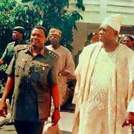

Only real democracy can move our nation forward towards progress, and earn her the respect she deserves from the international community.
-
Our youths, in particular, can see no hope on the horizon, and many can only dream of escaping from our shores to join the brain drain. Is this the Nigeria we want? We are plagued also by periodic balance of payments crises, which have led to a perennial shortage of essential drugs, that has turned our hospitals and clinics into mortuaries.
-
Those with whom I have sought to dialogue have remained like stones, neither stirred to show loyalty to the collective decision of the people of their own country, nor to observe Allah’s injunction that they should exhibit justice and fair play in all their dealings with their fellowmen.
-
I am the custodian of a sacred mandate, freely given, which I cannot surrender unless the people so demand, and it is by virtue of this mandate that I say that the decision of the Federal Military Government to cancel the election of June 12, 1993 is invidious, unpatriotic and capable of causing undue and unnecessary confusion in the country.
-
Like the South Africans, we want MAJORITY rule today, that is rule only by those chosen by all the people of Nigeria as a whole in free and fair elections.
-
The antics of every minority that oppresses the majority are always the same. They will try to intimidate you with threats of police action. But do not let us fear arrest
May his soul rest in peace
Amen